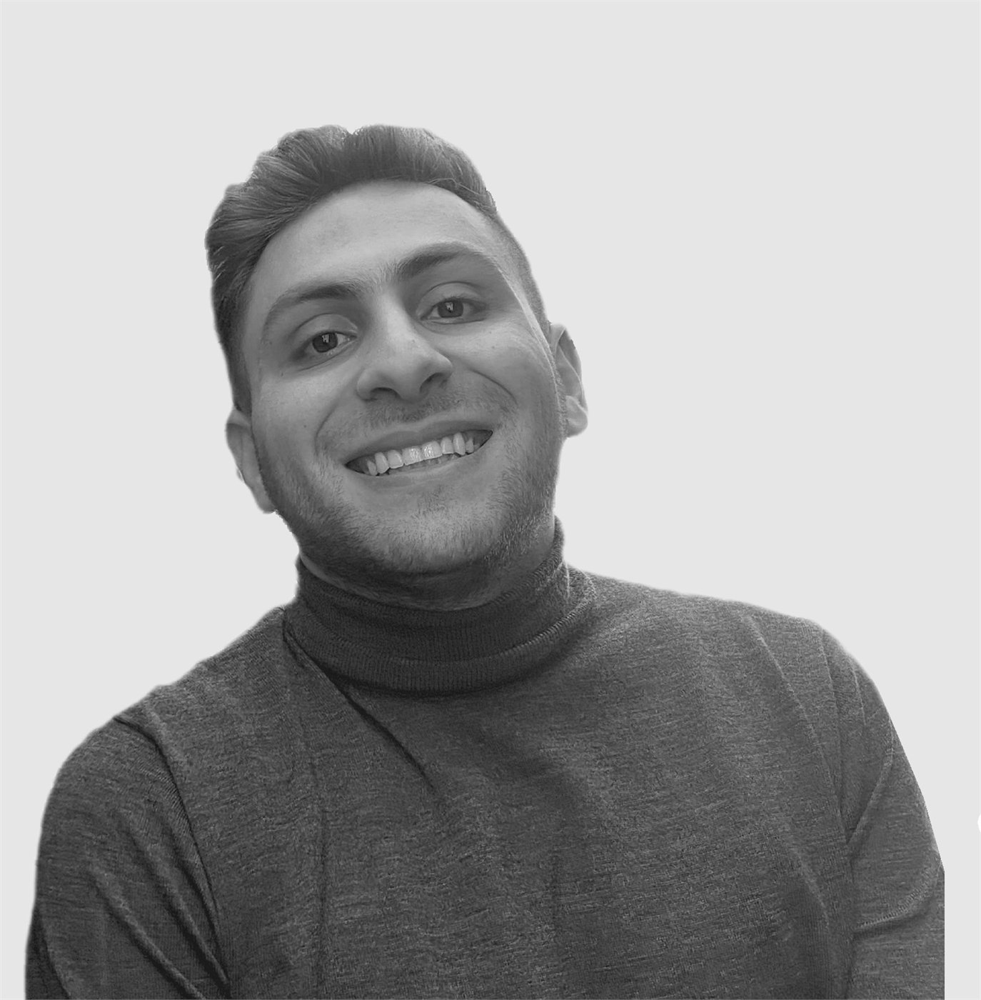

Architect and urban researcher.
Working on the regeneration of conflict-affected and climatically fragile cities, with a focus on the Levant.

I am an architect and urban researcher exploring conflict-affected and climatically fragile cities, with a focus on the Levant. Sometimes my work features architecture as a medium of climatic action and political activism. Otherwise it's a mere experimental medium of constant learning and self-actualisation. I tend to believe that architecture is a public service, not more, not less.
My work is also sometimes exhibited and published at international and national settings like the Venice Biennale of Architecture 2025 and Europan 18. I am currently pursuing a Master of Advanced Studies in Urban and Territorial Design at ETH Zurich and EPFL.